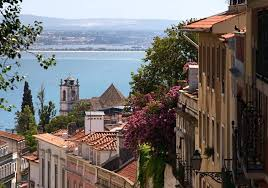
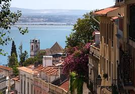
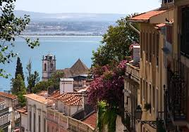

If you had asked me 15 years ago where I would be at 40, I probably would have told you convincingly, married with children and living in a col de sac in some family friendly town in the US.
Fast forward to now. I'm a 41 year old man with no kids, no family and a crazy plan to quit my job, start a new career as a web developer and move to lisbon next summer.
I already know what most of you are probably thinking!
Where in the world is Lisbon? No. No. Seriously. It's fine.
You're wondering why a middle aged man would do something that he probably should've done in his 20's or 30's. Right?
